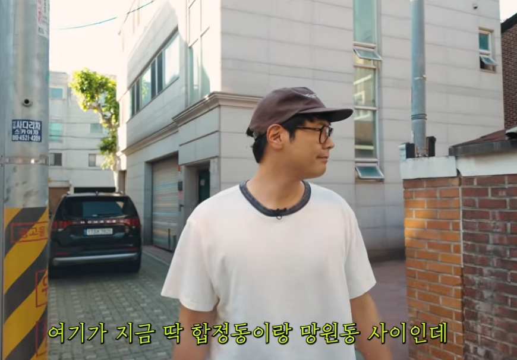
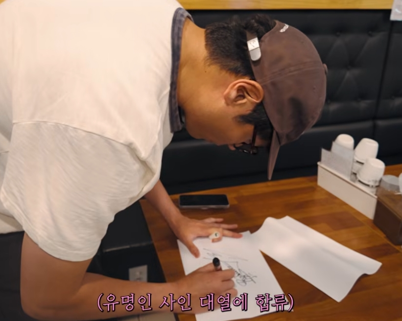
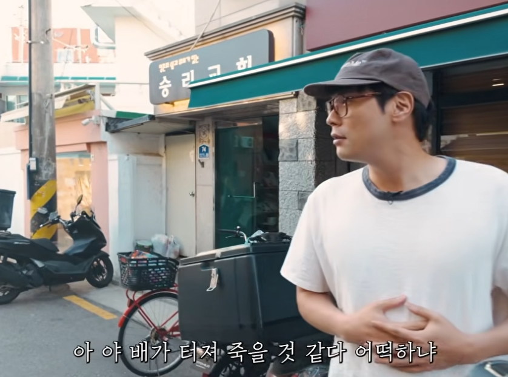
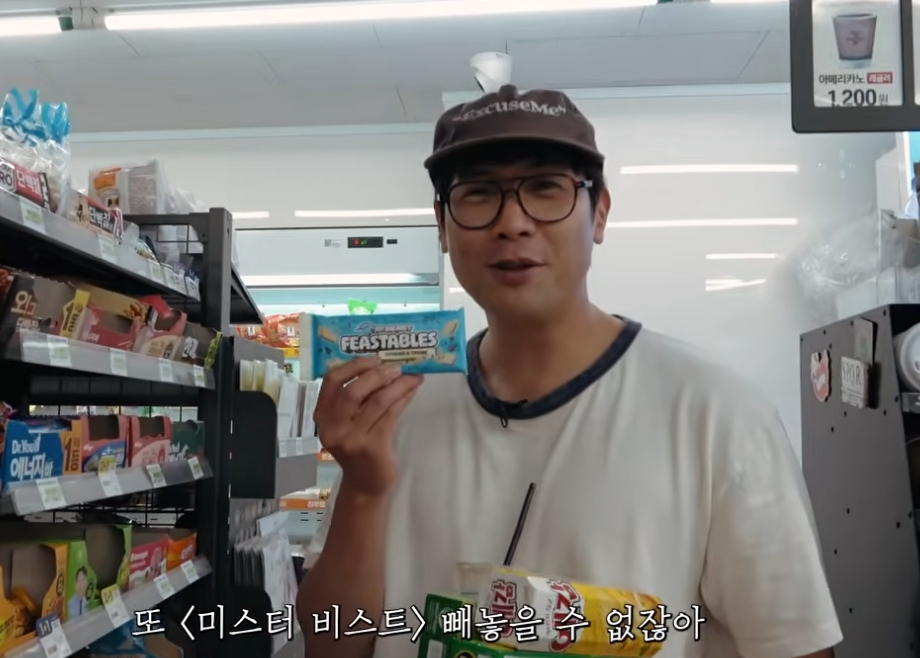
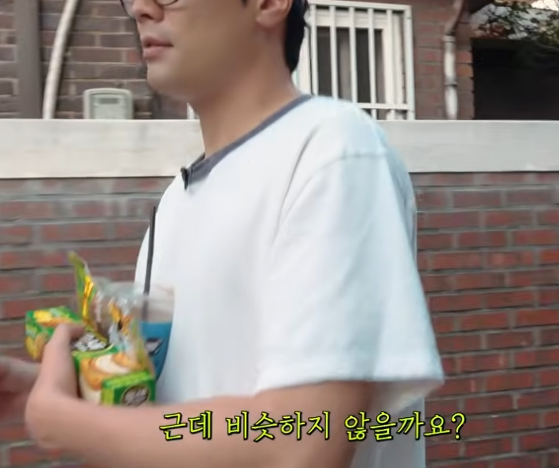
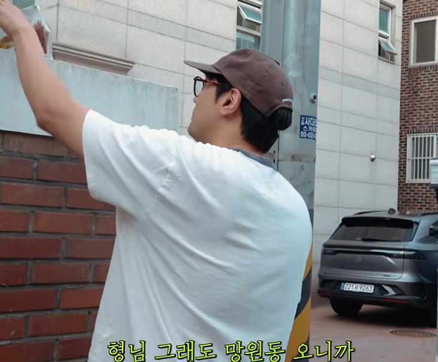

이 영상의 재미는 거창한 기획보다 가벼운 발걸음에 있다. “망원동 핫플”이라는 목표를 세웠지만, 실제로는 처음 와본 골목에서 길을 묻고, 밥집을 고르고, 더운 날씨를 말하는 순간들이 콘텐츠의 중심이 된다.
핫플을 찾는 사람보다 먼저 보이는 동네
초반 대화는 “여기가 성수동이냐”, “망원동에 자주 오느냐”, “망리단길을 아느냐” 같은 질문으로 흘러간다. 정답을 알고 안내하는 여행 콘텐츠라기보다, 잘 모르는 곳을 직접 걸으며 현장에서 감각을 맞춰가는 방식이다.
그래서 이 콘텐츠는 “어디가 유명하다”보다 “여기는 어떤 느낌인가”에 가깝다. 망원동과 합정 사이, 망원시장 주변, 망리단길이라는 이름들이 언급되지만 영상은 지도처럼 정리하기보다 동선의 감각을 따라간다.
사무실에서 거리로, 거리에서 밥집으로
대화는 사무실, 팟캐스트, 사랑 이야기 같은 엉뚱한 방향으로 잠시 흘렀다가 다시 식사 문제로 돌아온다. “밥 먹으러 가자”는 말이 나오면서 영상은 본격적으로 동네 탐색 모드로 바뀐다.
망원동이 핫플인지, 아니면 핫플로 가는 다리 같은 곳인지 농담처럼 말하는 장면도 인상적이다. “내가 가는 곳이 핫플”이라는 식의 말장난은 영상의 톤을 잘 보여준다. 장소 소개와 예능적 캐릭터가 섞이는 순간이다.

여름 골목의 생활감
영상 중간에는 햇빛과 더위 이야기가 반복된다. “여름이다”, “7월이 오면 더 덥다” 같은 말은 특별한 정보는 아니지만, 거리 산책 콘텐츠에서는 이런 사소한 감각이 중요하다. 카메라가 담는 것은 장소의 이름만이 아니라 그날의 공기이기 때문이다.
망원동을 처음부터 잘 아는 사람의 안내라면 훨씬 빠르고 정확했을 것이다. 하지만 이 영상은 모르는 상태에서 걷기 때문에 오히려 시청자가 같이 둘러보는 느낌을 받는다. 유명 장소를 소비하는 방식이라기보다 동네에 천천히 들어가는 방식에 가깝다.
결국 밥 한 끼로 모이는 이야기
감자탕, 냉면, 돈가스 같은 음식 이름이 오가면서 영상은 자연스럽게 식사 장소를 찾는 흐름으로 좁혀진다. 무엇을 먹을지 정하는 과정은 대단한 사건이 아니지만, 같이 걷는 사람들 사이에서는 가장 현실적인 선택의 순간이다.

톤카츠 가게를 발견하고 “유명한가”, “한번 가볼까”라고 말하는 대목은 이 영상의 성격을 잘 압축한다. 정답을 들고 가는 것이 아니라, 걷다가 보이는 것을 선택한다. 그것이 동네 산책 콘텐츠의 가장 편한 재미다.

가벼움이 남기는 장점
이 영상은 망원동의 완벽한 가이드가 아니다. 오히려 그 점이 장점이다. 처음 온 사람의 어색함, 아는 척과 모르는 척 사이의 농담, 배고픔 때문에 빨리 결정을 내려야 하는 상황이 콘텐츠를 인간적으로 만든다.

망원동이라는 공간도 과장되지 않는다. “핫플”이라는 단어는 들어가지만, 화면 속 동네는 조용하고 생활감 있다. 그래서 영상은 관광지 소개보다 동네에 잠깐 섞여드는 느낌을 준다.

마지막으로 남는 것은 “어디가 핫플인가”보다 “그날 그 사람들이 어떻게 걸었는가”다. 대본을 보면 영상은 계속 옆길로 새지만, 그 옆길들이 망원동 산책의 핵심이 된다. 골목 콘텐츠는 목적지에 도착하기 전의 시간이 절반 이상이다.

전체 글 요약
최다니엘의 망원동 산책 콘텐츠는 핫플레이스를 정확히 소개하는 가이드라기보다, 처음 온 동네를 걸으며 대화와 식사 선택으로 분위기를 만들어가는 관찰형 영상이다. 망리단길, 여름 햇빛, 골목 가게, 밥집 선택이 자연스럽게 이어진다.
관련 검색하기